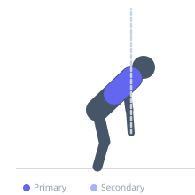

Exercise guide / Prone YTW-L with Mini Bands on Floor
Prone YTW-L with Mini Bands on Floor
A resistance-band progression of the bodyweight prone YTW-L exercise. With a light resistance band looped around both wrists, each arm position (Y, T, W, L) is performed against additional resistance, increasing the demand on the lower trapezius, middle trapezius, rhomboids, and infraspinatus. The band provides accommodating resistance — meaning the load increases as the arms move outward or upward where the band stretches more. This is an intermediate-level scapular and rotator cuff rehabilitation exercise for shoulder health programs.
Primary muscles
trapezius lower
trapezius middle
infraspinatus
Secondary muscles
rhomboid major
teres minor
deltoid posterior
Equipment
Resistance Band (Loop / Mini Band)


Starting position
- Lie face down with arms at the sides and forehead resting on the floor. Loop a very light mini resistance band around both wrists.
Setup
- Use the lightest available band. The band should provide only mild resistance in the Y and T positions. If the band prevents full range of motion, it is too heavy.
Steps
- Step 1 (Y): With the band looped around wrists, raise both arms to the Y angle (45 degrees overhead). The band stretches as arms move apart. Hold 2 seconds, lower.
- Step 2 (T): Raise arms to the T position (90 degrees from body). The band provides lateral resistance. Hold 2 seconds, lower.
- Step 3 (W): With elbows bent to 90 degrees and arms in W position, externally rotate against the band. Hold 2 seconds, lower.
- Step 4 (L): Elbows at 90 degrees bent close to the body, externally rotate both arms forward against the band. Hold 2 seconds, lower.
Coaching cues
- Use a very light band — the range and muscle engagement matter more than the resistance
- Feel the lower shoulder blades activating in the Y position
- In the W and L positions, the external rotators are the primary target — squeeze them during the hold
Breathing
- Exhale during each lift. Inhale as you lower.
Range of motion
- Full range in each position. If the band reduces range, switch to a lighter band.
Tempo
- 2s lift, 2s hold, 2s lower for each of the four positions
Common mistakes
- Using a band that is too heavy — this reduces range and trains compensation patterns
- Shrugging during the Y or T positions instead of engaging the lower trapezius
- Not completing the hold at each position — the holds are where most of the training stimulus occurs
Safety
- If any position causes pain, omit that position and consult a physiotherapist
- Start without resistance and add the band only once bodyweight version is tolerated
Training
- endurance: 5–12 reps
- strength: 5–10 reps
- endurance: 2–3 sets
- strength: 2–3 sets
- Rest: {'endurance': 60, 'strength': 90}